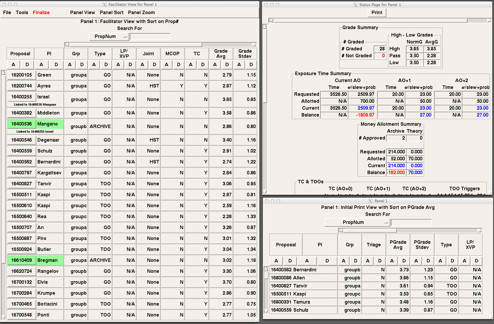

Overview
The Peer Review GUI is designed to aid panel facilitators in recording the decisions of the review panels during the Chandra Peer Review. The GUI is connected to a database which stores all of the panel information submitted through the GUI. Each panel is given a set of allotments to guide their approval process. The GUI keeps up-to-date information on the approval process to facilitate the panels in keeping within their various budgets.
Starting the GUI
To run the GUI, you must specify a user and panel.
- PR -U wink -panel 5
You should run the GUI from a directory where you have write permissions for printing out views. Any files created during the session will be created in that directory.
When the GUI starts, three windows will be launched. There is a Status Page which gives the tallies for all alloted values in the panel. There is the Panel Editor which contains a menu bar and holds the facilitator's view of the database. And finally, there is the Panel window which is what should be projected with the LCD projector.
GUI Options
- -U
- Peer Review user name. (Required)
- -panel
- Panel number you wish to load. (Required)
- -gv
- Postscript viewer to use. (Default is gv)
- -printer
- Printer destination. (Defaults to Peer Review printer)
- -if
- Y to ignore finalize locks. This should only be used by CDO. (Defaults to N)
- -test
- A number indicating the degree of verbosity to use. (Defaults to 0, no comments)
- -help
- Displays documentation for PR.
- -version
- Displays the version.
- -verbose
- Lists required options.